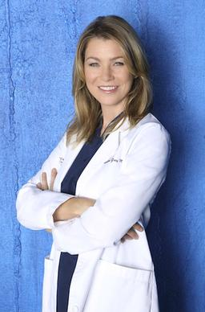

Meredith Grey, M.D.
Contact Information:
1234 Seattle Grace Lane
Seattle, WA 98101
Phone: (555) 123-4567
Email: meredith.grey@seattlegrace.com

Objective:
Dedicated and compassionate general surgeon with over a decade of experience in providing top-tier medical care. Seeking a leadership role in a cutting-edge medical facility to leverage extensive surgical expertise and foster the development of the next generation of surgeons.
Education:
Doctor of Medicine (M.D.)
- Graduated: 2005
- Honors: Magna Cum Laude, Alpha Omega Alpha Honor Medical Society
Bachelor of Science in Biology
- Graduated: 2001
- Honors: Summa Cum Laude
Professional Experience:
Chief of General Surgery
Grey Sloan Memorial Hospital, Seattle, WA
July 2015 — Present
- Lead and manage a multidisciplinary surgical team in a Level 1 trauma center.
- Perform high-risk surgeries, including organ transplants, complex trauma cases, and innovative procedures.
- Develop and implement surgical protocols to improve patient outcomes and reduce mortality rates.
- Mentor and train surgical residents and fellows, emphasizing hands-on experience and academic excellence.
- Oversee the hospital’s surgical research initiatives, contributing to numerous published studies in peer-reviewed medical journals.
Attending General Surgeon
Seattle Grace Mercy West Hospital, Seattle, WA
July 2008 — June 2015
- Managed a diverse caseload, performing surgeries ranging from routine procedures to complex, life-saving operations.
- Collaborated with interdisciplinary teams to provide comprehensive care, resulting in improved patient satisfaction and recovery rates.
- Pioneered several surgical techniques that have been adopted hospital-wide.
- Actively participated in hospital committees focused on quality improvement and patient safety.
Resident, General Surgery
Seattle Grace Hospital, Seattle, WA
July 2005 — June 2008
- Completed rigorous training in all aspects of general surgery, including trauma, oncology, and cardiothoracic surgery.
- Received extensive hands-on experience under the guidance of leading surgeons in the field.
- Presented case studies and research findings at national surgical conferences.
Skills:
- Expertise in general and trauma surgery
- Leadership and team management
- Surgical research and clinical trials
- Advanced patient care and critical decision-making
- Proficient in laparoscopic and robotic surgery
- Strong communication and interpersonal skills